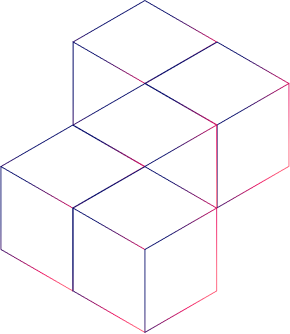
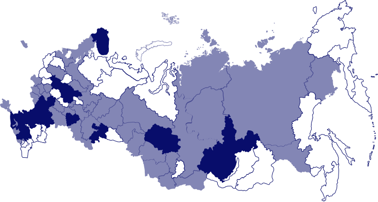

XVII Южно-Российская межрегиональная олимпиада школьников «Архитектура и искусство» по комплексу предметов (рисунок, живопись, композиция, черчение).
Олимпиада проводится для учащихся общеобразовательных учебных заведений 6-11 классов по комплексу предметов: рисунок, живопись, композиция, черчение и включает два отборочных этапа и заключительный этап.
Входит в Перечень олимпиад Министерства науки и высшего образования РФ. Входит в Перечень мероприятий Министерства просвещения РФ.
Результаты олимпиады вносятся в государственный информационный ресурс о лицах, проявивших выдающиеся способности (ГИР).
В олимпиаде могут принимать участие школьники стран СНГ.


региона России участвуют в проведении
площадки
участников из 61 региона РФ
Проект Глеба Чуркина, студента-архитектора выпускного курса бакалавриата в числе лучших по итогам конкурса
В Академии архитектуры искусств ЮФУ с 10 по 13 марта 2026 года комиссиями по рисунку, живописи, композиции и черчению проводилось подведение итогов заключительного этапа.
Заключительный этап XVIII ЮРМОШ-2026 прошел на 73 площадках в более 20 регионах России
Проводится на более чем 75 площадках олимпиады в очной и заочной форме в соответствии с графиком проведения, размещаемом на сайте Олимпиады.
Проводится на более чем 75 площадках олимпиады в очной и заочной форме в соответствии с графиком проведения, размещаемом на сайте Олимпиады.
Проводится на более чем 70 в очной форме на площадках олимпиады заключительного этапа в соответствии с графиком проведения